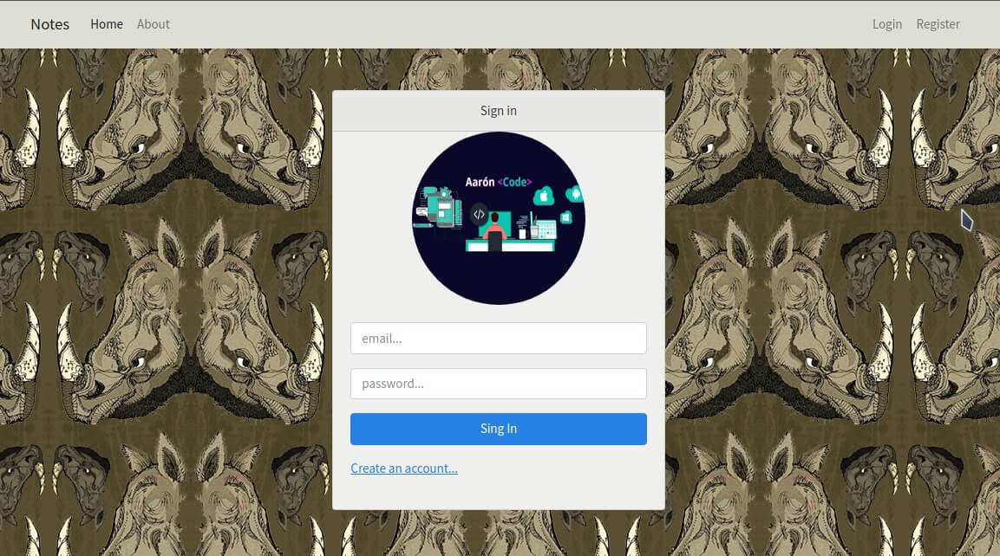
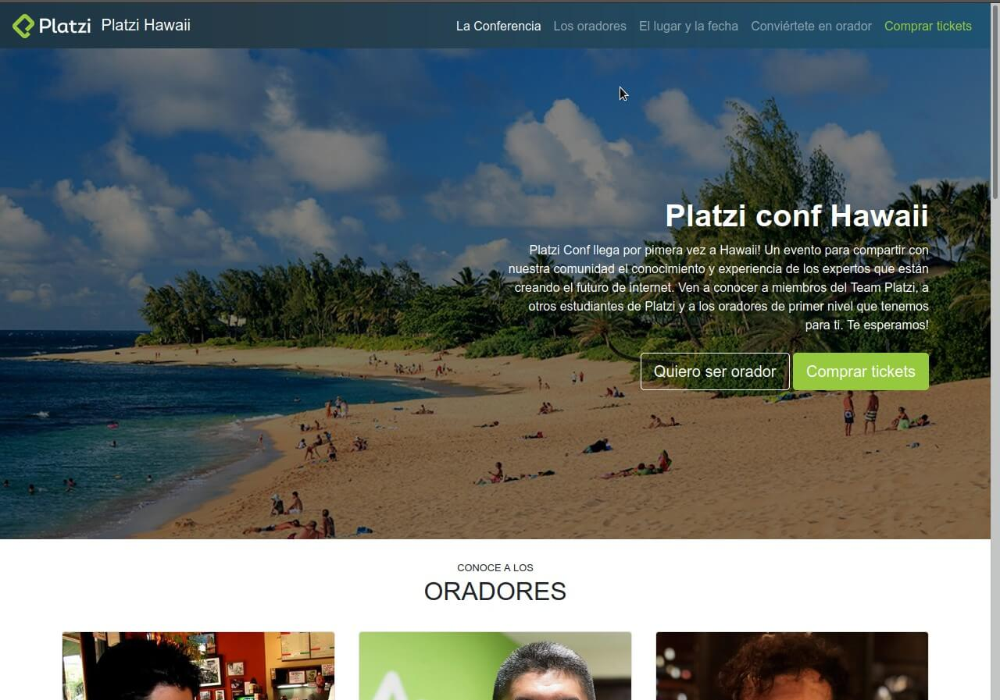

Portafolio

Notes App
Project to add notes made with nodejs and express
Project carried out for the company GooSistem
GooSistem
Dino Burguer
Layout made with HTML and the CSS Foundation framework in the personal practice projects.
Single Page Application (SPA) made with Javascript Html and Css.

Spa de Rick and Morty

Aaron Music
Web layout Made with Html, Sass Preprocessor and a library Javascript called animate.js.
Web layout Made with Html and the Bootstrap framework project of practice.
Platzi Conf Hawaii

Full Video
Web layout Made with Html, Javascript and Css Using an API of movies.